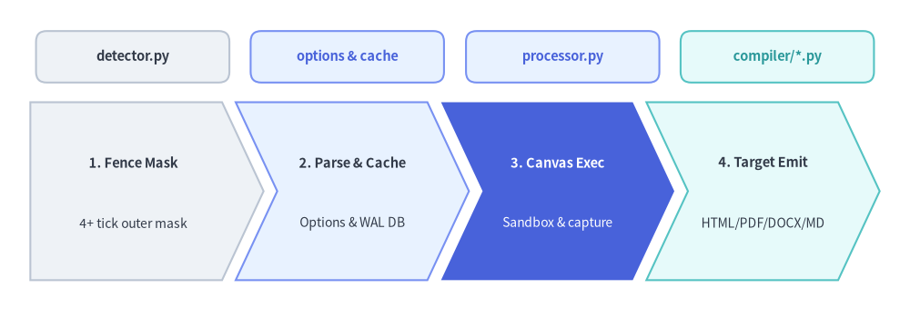
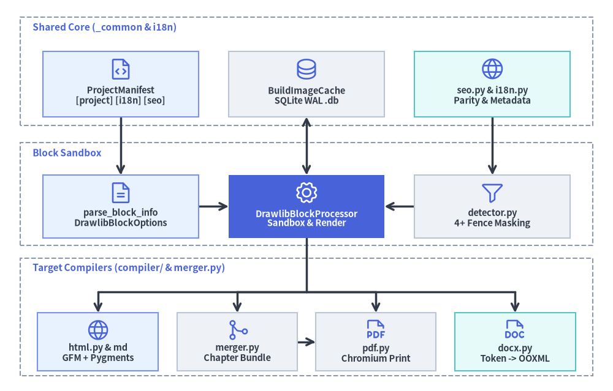
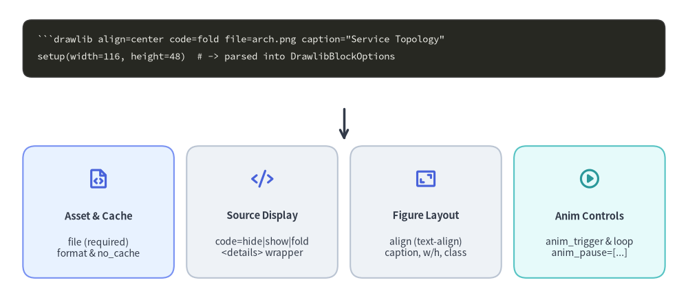

Markdown Tokenization & Code Block Processor
The core engine powering "Illustrated Documentation as Code" is Drawlib's document builder and compilation pipeline (_builder/). Rather than executing untrusted Markdown snippets via naive string splits or forcing manual pre-generation scripts, Drawlib combines line-preserving outer-fence masking, deterministic SQLite WAL image caching, in-process sandboxed Canvas execution, and multi-target AST/HTML compilation across Markdown, HTML, PDF, and Word (.docx) outputs.
This chapter details the hybrid pre-AST block processor, DrawlibBlockOptions parsing, sandbox execution and traceback mapping, standalone script AST checks, and multi-locale drawlib.toml parity validation.

Source Code
from drawlib.canvas import save, setup
from drawlib.shapes import rectangle
from drawlib.smartarts import ChevronProcess
from drawlib.styles import Styles
setup(width=120, height=42)
# Top module badges aligned above each pipeline chevron
badges = [
(17.5, "detector.py", Styles.Neutral, Styles.DarkBold),
(45.8, "options & cache", Styles.PrimaryNeutral, Styles.PrimaryBold),
(74.2, "processor.py", Styles.PrimaryNeutral, Styles.PrimaryBold),
(102.5, "compiler/*.py", Styles.SecondaryNeutral, Styles.SecondaryBold),
]
for cx, label, box_style, txt_style in badges:
rectangle(
(cx, 34.5),
width=25.5,
height=6.8,
style=box_style.patch(shape_r=1.4),
text=label,
text_style=txt_style.patch(text_size=10.5),
)
# 4-stage sequential compilation pipeline
pipeline = ChevronProcess(
style=Styles.Neutral,
text_style=Styles.DarkBold.patch(text_size=10.5),
description_style=Styles.Dark.patch(text_size=10.0),
corner_angle=65.0,
spacing=1.8,
flat_left_end=True,
)
pipeline.add("1. Fence Mask", description="4+ tick outer mask")
pipeline.add("2. Parse & Cache", description="Options & WAL DB", style=Styles.PrimaryNeutral)
pipeline.add(
"3. Canvas Exec",
description="Sandbox & capture",
style=Styles.PrimaryFlat,
text_style=Styles.WhiteBold.patch(text_size=10.5),
description_style=Styles.White.patch(text_size=10.0),
)
pipeline.add("4. Target Emit", description="HTML/PDF/DOCX/MD", style=Styles.SecondaryNeutral)
pipeline.draw(xy=(4.0, 5.0), width=112.0, height=23.5)
save()
1. Concept: Line-Preserving Fence Masking & Hybrid AST Pipeline
Documentation pages routinely embed literal ```drawlib tutorial snippets inside outer 4-backtick ( markdown ) or tilde ( ~~~~ ````) fences. If a naive regex scanned the raw file, it would accidentally execute documentation examples; conversely, if full GFM HTML conversion ran first, DrawlibBlockProcessor could no longer emit target-specific Markdown links (for markdown.py and docx.py) alongside rich <figure>/<details> markup (for html.py and pdf.py).
Drawlib resolves both constraints through a 4-stage hybrid text and AST pipeline:
- Stage 1 — Outer Fence Masking (
detector.preserve_outer_fences):- Scans the source Markdown line-by-line before block extraction and replaces any fenced block delimited by 4 or more backticks or tildes with a multi-line placeholder (
__DRAWLIB_PRESERVED_FENCE_{idx}__padded with__DRAWLIB_FENCE_PAD_{idx}_{line}__). - Preserving the exact physical line count ensures any syntax or runtime error in a downstream
```drawlibblock still reports the truefile.md:lineoffset.
- Scans the source Markdown line-by-line before block extraction and replaces any fenced block delimited by 4 or more backticks or tildes with a multi-line placeholder (
- Stage 2 — Pre-Flight Collision Check & Block Extraction (
progress.py&processor.py):check_document_output_duplicates()scans all targetfile=attributes across the project to reject duplicate output asset paths before execution begins.DrawlibBlockProcessor.process_markdown()extracts active 3-backtick```drawlibblocks, parsesDrawlibBlockOptions, and computes deterministic cache keys (BuildImageCache.compute_keys) incorporating code text, dimensions, format, DPI, and hashedstyles.py/utils.pydependencies.- (HTML Input Support):
detect_document_type()(detector.py) classifies inputs intoDocumentInputInfo("markdown_drawlib","markdown","html_drawlib", or"html"). Raw.html/.htmfiles embedding<script type="text/drawlib" ...>tags route throughDrawlibBlockProcessor.process_html(). - (Standalone Image Projects): For
type = "images"(image_builder.py:DrawlibExecuter),_image_ast.py(_SaveCallVisitor) statically inspectsast.Callsave(...)nodes viacheck_duplicate_script_outputs()andresolve_static_save_target()to detect output collisions and resolve single-target cache hits without executing Python.
- Stage 3 — Parallel Worker Pre-Rendering & Sandboxed Canvas Execution (
_common/parallel.py&processor.py):- When
workers > 1(default"auto"->1 <= (CPU cores - 1) <= 8, overrideable via-w/--workersorDRAWLIB_BUILD_WORKERS) and 2+ unique cache misses exist,prerender_document_blocks()(andexecute_scripts_parallel()forimagesprojects) schedules uncached blocks Longest-Job-First across aspawnProcessPoolExecutor. Workers render atomically without touching SQLite; the parent process writes.drawlib/cache.db(or populatesBuildImageCache.prerendered_blobsfor--no-cacheinlinepdf/docxbuilds), while Warm-Cache rebuilds (<= 1miss) skip process spawning altogether. - During sequential assembly (or when
workers=1),DrawlibBlockProcessormaterializes cached/pre-rendered images—or executes single misses in-process againstCanvas—and substitutes fences with<figure class="drawlib-image">/<div class="drawlib-image">(orMarkdown image links), beforerestore_outer_fences()restores masked 4+-backtick tutorial blocks verbatim.
- When
- Stage 4 — Downstream Target Compilation (
parser.py&exporter_docx.py):- For HTML and PDF (
compiler/html.py,compiler/pdf.py),parse_markdown_to_html()(parser.py) tokenizes GFM prose, tables, and remaining code blocks viamarkdown-it-py+ Pygments (highlight.py). - For Word
.docx(compiler/docx.py,exporter_docx.py),_DocxChapterRendererwalks theMarkdownIttoken stream directly into OpenXML paragraphs, runs, tables, and240 DPIimages without an intermediate HTML conversion pass.
- For HTML and PDF (
2. Positioning: doc_builder Subsystem Architecture
The _builder package separates shared project/cache infrastructure (_builder/_common/) from Markdown/HTML block processing (doc_builder/processor/) and multi-format output compilers (doc_builder/compiler/):

Source Code
from drawlib.canvas import save, setup
from drawlib.diagrams.architecture import (
ArchitectureDiagram,
Node,
NodeGroup,
PhosphorIcon,
)
from drawlib.styles import Styles
setup(width=122, height=78)
d = ArchitectureDiagram(
node_style=Styles.Primary,
node_text_style=Styles.DarkBold.patch(text_size=10.5),
edge_style=Styles.DarkBold,
edge_text_style=Styles.Dark.patch(text_size=10.0),
node_card_style=Styles.Neutral,
)
# Row 1: Shared Project, Cache & SEO Infrastructure (_builder/_common)
common_grp = d.add(
NodeGroup(
title="Shared Core (_common & i18n)",
width=114.0,
height=21.5,
style=Styles.MutedDashed,
text_style=Styles.PrimaryBold.patch(text_size=11.0, halign="left"),
),
xy=(4.0, 53.0),
)
manifest = common_grp.add(
Node(
"ProjectManifest\n[project] [i18n] [seo]",
width=31.0,
height=13.0,
icon=PhosphorIcon.FILE_CODE,
icon_size=5.0,
card_style=Styles.PrimaryNeutral,
),
xy=(20.0, 8.2),
)
cache = common_grp.add(
Node(
"BuildImageCache\nSQLite WAL .db",
width=31.0,
height=13.0,
icon=PhosphorIcon.DATABASE,
icon_size=5.0,
),
xy=(57.0, 8.2),
)
seo_i18n = common_grp.add(
Node(
"seo.py & i18n.py\nParity & Metadata",
width=31.0,
height=13.0,
icon=PhosphorIcon.GLOBE,
icon_size=5.0,
card_style=Styles.SecondaryNeutral,
),
xy=(94.0, 8.2),
)
# Row 2: Fence Detection, Options & Block Execution Sandbox
proc_grp = d.add(
NodeGroup(
title="Block Sandbox",
width=114.0,
height=20.5,
style=Styles.MutedDashed,
text_style=Styles.PrimaryBold.patch(text_size=11.0, halign="left"),
),
xy=(4.0, 29.0),
)
opts = proc_grp.add(
Node(
"parse_block_info\nDrawlibBlockOptions",
width=31.0,
height=12.5,
icon=PhosphorIcon.FILE_TEXT,
icon_size=5.0,
card_style=Styles.PrimaryNeutral,
),
xy=(20.0, 7.8),
)
processor = proc_grp.add(
Node(
"DrawlibBlockProcessor\nSandbox & Render",
width=31.0,
height=12.5,
icon=PhosphorIcon.GEAR,
icon_size=5.0,
style=Styles.White,
card_style=Styles.PrimaryFlat,
text_style=Styles.WhiteBold.patch(text_size=10.5),
),
xy=(57.0, 7.8),
)
detector = proc_grp.add(
Node(
"detector.py\n4+ Fence Masking",
width=31.0,
height=12.5,
icon=PhosphorIcon.FUNNEL,
icon_size=5.0,
),
xy=(94.0, 7.8),
)
# Row 3: Target Compilers & Chapter Merger (compiler/ & merger.py)
comp_grp = d.add(
NodeGroup(
title="Target Compilers (compiler/ & merger.py)",
width=114.0,
height=23.5,
style=Styles.MutedDashed,
text_style=Styles.PrimaryBold.patch(text_size=11.0, halign="left"),
),
xy=(4.0, 3.0),
)
html_md = comp_grp.add(
Node(
"html.py & md\nGFM + Pygments",
width=24.0,
height=11.6,
icon=PhosphorIcon.GLOBE,
icon_size=4.8,
card_style=Styles.PrimaryNeutral,
),
xy=(15.5, 6.8),
)
merger = comp_grp.add(
Node(
"merger.py\nChapter Bundle",
width=24.0,
height=11.6,
icon=PhosphorIcon.GIT_MERGE,
icon_size=4.8,
),
xy=(43.2, 6.8),
)
pdf_comp = comp_grp.add(
Node(
"pdf.py\nChromium Print",
width=24.0,
height=11.6,
icon=PhosphorIcon.FILE_PDF,
icon_size=4.8,
),
xy=(70.8, 6.8),
)
docx_comp = comp_grp.add(
Node(
"docx.py\nToken -> OOXML",
width=24.0,
height=11.6,
icon=PhosphorIcon.FILE_DOC,
icon_size=4.8,
card_style=Styles.SecondaryNeutral,
),
xy=(98.5, 6.8),
)
d.connect(manifest, opts)
d.connect(processor, cache, arrow="<->")
d.connect(seo_i18n, detector)
d.connect(opts, processor)
d.connect(detector, processor)
# Clean orthogonal fan-out bus below Row 3's header into each compiler's top center
bus = d.junction((61.0, 19.8))
d.connect(processor, bus, arrow="-")
for cx, target in [(19.5, html_md), (47.2, merger), (74.8, pdf_comp), (102.5, docx_comp)]:
tap = d.junction((cx, 19.8))
d.connect(bus, tap, arrow="-")
d.connect(tap, target)
d.connect(merger, pdf_comp)
d.draw()
save()
Code Fence Attribute Tokenization (processor/options.py)
parse_block_info() and tokenize_kv_pairs() parse space-separated key=value attributes on the opening ```drawlib fence line (supporting quoted strings, bracketed integer lists like anim_pause=[2, 5], and HTML <script type="text/drawlib"> tag attributes) into a validated DrawlibBlockOptions dataclass:

Source Code
from drawlib.canvas import save, setup
from drawlib.icons import phosphor
from drawlib.lines import line
from drawlib.smartarts import CardList, SourceCode, SourceCodeStyles
from drawlib.styles import Styles
setup(width=120, height=52)
snippet = (
'```drawlib align=center code=fold file=arch.png caption="Service Topology"\n'
"setup(width=116, height=48) # -> parsed into DrawlibBlockOptions"
)
code_styles = SourceCodeStyles.get("dark", font_lang="en", text_size=10.0)
SourceCode.draw(
xy=(4.0, 48.5),
width=112.0,
code=snippet,
styles=code_styles,
code_lang="markdown",
show_linenum=False,
)
line((60.0, 33.0), (60.0, 27.5), arrow_head="->", style=Styles.DarkBold)
groups = CardList(
style=Styles.Neutral,
text_style=Styles.DarkBold.patch(text_size=10.5),
description_style=Styles.Dark.patch(text_size=10.0),
badge_shape="none",
icon_style=Styles.PrimaryBold,
direction="horizontal",
spacing=2.2,
)
groups.add(
"Asset & Cache",
"file (required)\nformat & no_cache",
icon=phosphor.file_code,
style=Styles.PrimaryNeutral,
)
groups.add(
"Source Display",
"code=hide|show|fold\n<details> wrapper",
icon=phosphor.code,
)
groups.add(
"Figure Layout",
"align (text-align)\ncaption, w/h, class",
icon=phosphor.frame_corners,
)
groups.add(
"Anim Controls",
"anim_trigger & loop\nanim_pause=[...]",
icon=phosphor.play_circle,
style=Styles.SecondaryNeutral,
icon_style=Styles.SecondaryBold,
)
groups.draw(xy=(4.0, 3.5), width=112.0, height=23.0)
save()
Complete DrawlibBlockOptions Reference
| Option | Type & Allowed Values | Default | Behavior in DrawlibBlockProcessor |
|---|---|---|---|
file |
str | None |
(Required) | Output asset filename (e.g., file=arch.png or file=flow.svg). DrawlibBlockProcessor(..., require_file=True) raises ValueError if file= is omitted (sequential 1.png naming is enabled only when require_file=False inside internal rules_builder.py), and check_document_output_duplicates() rejects collisions pre-build. |
format |
"png" | "svg" | "webp" | "pdf" | None |
None |
Explicit format override when not inferred from file extension (falls back to compiler image_format). |
code |
"hide" | "show" | "fold" |
"hide" |
"hide" emits only the image; "show" renders syntax-highlighted Python above the image; "fold" wraps source inside a collapsible HTML <details> disclosure block. |
align |
"left" | "center" | "right" | None |
None |
Applies inline `style="text-align: center |
caption |
str | None |
None |
Upgrades the wrapper to <figure class="drawlib-image"> and appends <figcaption>...</figcaption>. |
width, height |
str | None |
None |
Optional HTML <img> dimension attributes (e.g., 80%, 640px, or integer pixels). |
css_class |
str | None (class=...) |
None |
Appends custom CSS class names to the generated image element. |
no_cache |
bool |
False |
Forces fresh execution of this specific block even when .drawlib/cache.db holds a matching digest. |
anim_trigger |
"auto" | "click" | None |
None |
Activates <canvas class="drawlib-anim-canvas"> interactive playback ("auto" on slide entry or "click"). |
anim_loop |
"once" | "infinite" | None |
None |
Controls playback looping (automatically defaults to "once" whenever anim_pause is provided). |
anim_pause |
list[int] | None |
None |
Sorted positive frame indices (e.g., anim_pause=[2, 5]) where interactive playback pauses awaiting user advance. |
3. Details: Sandboxed Execution & Accurate Line Diagnostics
When BuildImageCache.get() reports a cache miss (or no_cache=True), DrawlibBlockProcessor._exec_code_block() and render_block_to_file() (processor/processor.py) execute the Python block in-process without spawning slow subprocesses:
- Preloaded
shared_globals& Canvas Reset:- Project-wide
styles.pyandutils.pymodules are loaded once viaload_styles_and_utils()intoself.shared_globals(drawlib.stylesanddrawlib.utils). - Before each block runs, the processor calls
l4_canvas.clear()so figure dimensions, artist lists, and activeAnimationstate never leak across blocks, and constructs a fresh execution namespace seeded fromshared_globals.
- Project-wide
_no_op_saveMonkeypatching &redirect_stdoutIsolation:- Within the block namespace,
drawlib.canvas.save(and directfrom drawlib.canvas import savebindings) is monkeypatched to_no_op_saveso user code callingsave()at the end of a snippet does not write prematurely to disk. - Execution runs inside
contextlib.redirect_stdout(io.StringIO())(unless developer verbose logging is enabled), preventing strayprint()calls inside diagrams from polluting CLI build progress bars. - Once execution finishes,
render_block_to_file()invokes the reall4_canvas.save()(orAnimation._save()) to produce the target asset and stores the resulting bytes insideBuildImageCache.put().
- Within the block namespace,
- Exact Source Line Traceback Mapping (
compile(..., filename=source_filename)):- Rather than passing raw strings to
exec(), the processor compiles code viacompile(padded_code, filename=source_filename, mode="exec")aligned to the fence's starting line number in the.mdor.htmlsource. Any syntax or validation error immediately reports the exactpath/to/page.md:linelocation.
- Rather than passing raw strings to
4. Project Manifest (drawlib.toml), [seo] & Multi-Locale i18n Parity
Directory builds across images, doc, site, and slide archetypes are governed by ProjectManifest (_builder/_common/manifest.py), seo.py (_builder/_common/seo.py), and validate_i18n_project() (doc_builder/i18n.py):
- Three-Section Declarative Manifest (
ProjectManifest):[project](ProjectMetadata): Declarestype("images" | "doc" | "site" | "slide"),title,style,image_format, and single-localelang(forimagesprojects).[i18n](I18nConfig): Required ondoc,site, andslideprojects; definesdefault_lang,langs, locale switcher display names ([i18n.labels]), and localized meta summaries ([i18n.descriptions]).[seo](SeoConfig): Configures canonicalsite_url, Open Graph preview asset (og_image), Twitter card metadata (twitter_card,twitter_site), and automated generation ofsitemap.xml(sitemap),robots.txt(robots), and LLM-friendly documentation indexes (llms_txt).
- Pre-Flight
i18nStructural Parity (extract_markdown_skeleton):- Before executing any diagram block on a multi-locale project (
len(langs) > 1),validate_i18n_project()verifies identical relative.mdfile trees across<src_dir>/<lang>/, matchingnavbar.mdlink targets (forsite), and matching document skeletons viaextract_markdown_skeleton(). - Heading & Prose Flexibility:
extract_markdown_skeleton()enforces structural parity acrossH1–H3headings (HeadingToken), fenced code blocks (CodeBlockToken), anddrawlibblocks (DrawlibBlockToken)—while collapsingH4–H6subheadings, paragraphs, lists, tables, and blockquotes intoMarkdownTextToken(and stripping::: note/ unwrapping::: blockonslidedecks) so translators can adapt fine-grained prose naturally.
- Before executing any diagram block on a multi-locale project (
- Shared vs. Locale-Specific Diagram Parity:
- Language-Neutral Shared Diagrams (
file=arch.png): Must contain identical Python source code across every locale. The compiler executes the block once using root<src_dir>/styles.py&utils.pyand writes a single deduplicated asset into<output>/images/arch.png. - Localized Diagrams (
file=arch_<lang>.png): Diagrams with translated labels use locale-suffixed filenames (arch_en.png,arch_ja.png) and resolve optional per-locale<src_dir>/<lang>/styles.pyandutils.pyoverrides.
- Language-Neutral Shared Diagrams (
Next, explore how processed documents compile into HTML sites, normalized PDFs, and OpenXML Word archives in Multi-Target Exporters.